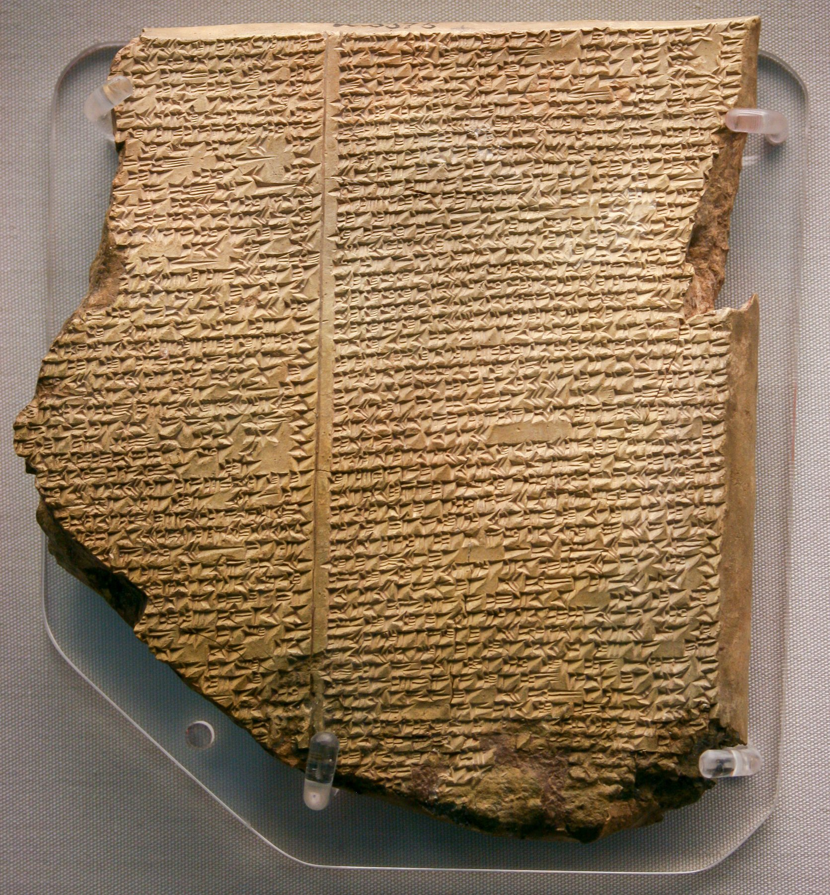

Epic of Gilgamesh Tablet XI

- Find Name
- Epic of Gilgamesh Tablet XI
- Description
- Tablet XI of the Epic of Gilgamesh is the famous 'Flood Tablet,' in which the hero Utnapishtim tells Gilgamesh how the gods sent a flood, how the god Ea warned him to build a boat, load it with animals, and survive, and how he released birds to find dry land and offered sacrifice afterward. The best-known copy (British Museum K.3375) comes from the Library of Ashurbanipal at Nineveh and dates to the 7th century BC, though versions of the story are at least a thousand years older. Excavated at Kouyunjik by Austen Henry Layard (1849) and Hormuzd Rassam (1853), it was identified and translated by George Smith in December 1872.
- Historical Period
- Neo-Assyrian period, 7th century BC
- Evidence Class
- Contextual
- Interpretations
- The Flood Tablet is the best-known Mesopotamian parallel to Noah's flood, sharing the divine warning, the boat, the animals, the landing, the birds, and the sacrifice - but it is a parallel, not proof of the Genesis account. Its gods flood the world for secret, inscrutable reasons and then squabble over the survivor, while Genesis gives a moral cause (human wickedness) and a covenant. The tablet's fame also matters historically: its 1872 translation stunned Victorian readers by showing a flood story older than the previously known texts.
- Alternative Names
- Flood Tablet; Gilgamesh Flood Tablet
- Related Places
- Related Books
- Related Events
- Scripture Illuminated
- Biblical Significance
- Tablet XI confirms that a flood story with Noah-like details circulated in Mesopotamia long before and alongside Israel, sharpening the question of what Genesis uniquely claims about God and judgment.
- Artifact Date
- 7th century BC
- Current Location
- British Museum, London (Room 55)
- Date Discovered
- 1849-1853 (excavated); identified 1872
- Discovery Location
- Kouyunjik (Nineveh), Iraq
- Timeline Era
- Primeval / Patriarchs
Awaiting Review Not yet checked against scholarly sources. Treat its claims as provisional until this entry is reviewed. About verification
Sources: https://en.wikipedia.org/wiki/Gilgamesh_flood_myth
https://www.worldhistory.org/image/4821/flood-tablet-of-the-epic-of-gilgamesh/
https://www.worldhistory.org/image/4821/flood-tablet-of-the-epic-of-gilgamesh/
Last reviewed: not yet reviewed